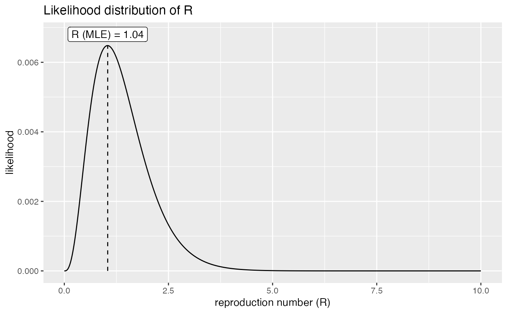

This function estimates the (most of the time, 'basic') reproduction number (R) using i) the known distribution of the Serial Interval (delay between primary to secondary onset) and ii) incidence data.
get_R(x, ...) # S3 method for default get_R(x, ...) # S3 method for integer get_R( x, disease = NULL, si = NULL, si_mean = NULL, si_sd = NULL, max_R = 10, days = 30, ... ) # S3 method for numeric get_R(x, ...) # S3 method for incidence get_R(x, ...)
| x | The daily incidence to be used for inferring the reproduction
number. Input can be an |
|---|---|
| ... | Further arguments to be passed to the methods. |
| disease | A character string indicating the name of the disease
studied. If provided, then |
| si | A |
| si_mean | The mean of the serial interval distribution. Ignored if
|
| si_sd | The standard deviation of the serial interval
distribution. Ignored if |
| max_R | The maximum value the reproduction number can take. |
| days | The number of days after the last incidence date for which the force of infection should be computed. This does not change the estimation of the reproduction number, but will affect projections. |
A list with the earlyR class, containing the following
components:
$incidence: the input incidence, in its original format
$R_grid: the grid of R values for which the likelihood has been
computed.
$R_like: the values of likelihood corresponding to the
$R_grid
$R_ml: the maximum likelihood estimate of R
$dates: the dates for which infectiousness has been computed
$lambdas: the corresponding values of force of infection
$si: the serial interval, stored as a distcrete object
The estimation of R relies on all available incidence data. As such,
all zero incidence after the first case should be included in
x. When using inidence from the 'incidence' package, make
sure you use the argument last_date to indicate where the epicurve
stops, otherwise the curve is stopped after the last case. Use
as.data.frame to double-check that the epicurve includes the last
'zeros'.
Thibaut Jombart thibautjombart@gmail.com
if (require(incidence)) { ## example: onsets on days 1, 5, 6 and 12; estimation on day 24 x <- incidence(c(1, 5, 6, 12), last_date = 24) x as.data.frame(x) plot(x) res <- get_R(x, disease = "ebola") res plot(res) }#>